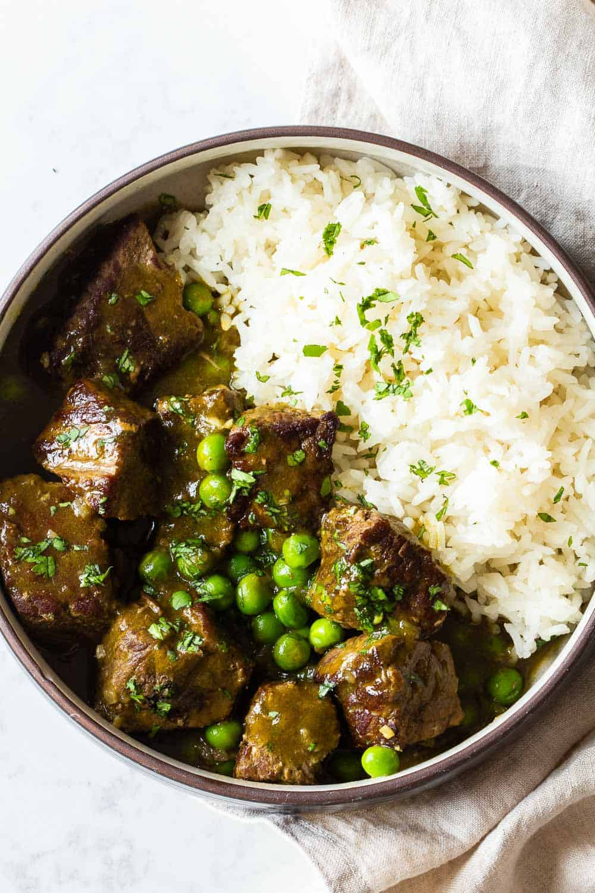

Instant Pot Beef Stew

The Peruvian seco is a typical dish of the north coast and of the capital
of the country. It is usually chicken, meat, kid, lamb, beef, chicken or
fish, its main ingredient, and the one that gives it its characteristic
flavor, is cilantro. It is usually accompanied by beans cooked and white
rice.
Ingredients
- Avocado Oil
- 2 lbs Stewing Beef
- Sea Salt and Pepper
- 1 White Onion
- 2 Cloves of Garlic
- 1-3 Tbsp Aji Amarillo (Optional but highly recommended)
- 1/2 Bunch of cilantro
- 1 Cup Beef Broth
- 1 Cup Frozen Peas
- 1 Tbsp Cornstarch
Instructions
- Pre Prep: Remove meat from fridge at least 30 minutes before
starting to cook so it's not too cold.
In the meantime, peel and chop onion, peel and crush garlic and
prepare "cilantro water".
- Cilantro Water: Add 1/2 bunch of cilantro (stems and all) to a
blender, add beef broth and salt and pepper to taste. Amounts will
depend on saltiness of beef broth.
- Brown Beef: Preheat instant pot by pressing the "sauté" button and
wait until it says "hot". Once hot, add a splash of avocado oil and then
brown the meat in 4-5 batches. Do NOT add all the beef at once. The
individual pieces should not touch each other while browning. If you add
too much meat at once it will release too much liquid and boil instead
of brown. Add more oil as needed in between batches. Remove the browned
beef and set aside in a bowl.
- Deglaze: Once all the meat is browned, add some water to the pot and
deglaze the bottom by scrubbing off all the burnt bits and pieces with a
wooden spatula. Then remove the inner pot and rinse and dry before
continuing.
- Sofrita: Add another splash of avocado oil to the pot (still on
sauté setting) and fry onion, garlic and ají until they start browning.
- Pressure Cook: Add browned beef and cilantro water back into the
instant pot, put on the lid and turn the vent to the sealing position.
Press "cancel", then "manual", make sure "high pressure" is selected and
set the timer for 35-40 minutes (depending on the size of the beef
cubes).
- Natural Pressure Release: Meat should always be depressurized
slowly. Let the instant pot release pressure naturally. This means, you
should not turn the valve to the venting position but rather wait until
the safety pin drops on its own. This will take 10-20 minutes (depending
on each individual pressure cooker).
- Add peas: Once the safety pin dropped, open the pot, add 1 cup
frozen peas and let them defrost in the hot sauce for about 2-3 minutes.
Then remove all meat and peas with a slotted spoon leaving all the
liquid in the pot and set aside.
- Cilantro Sauce/Gravy: Add 1 Tbsp starch and 1 Tbsp cold water to a
small bowl and stir vigorously until all clumps are gone. Hit "sauté"
again on the instant pot. Add starch slurry and whisk into the liquid.
Continue stirring until the sauce comes to a boil and cook for about 1-2
minutes. The gravy will start to thicken fairly quickly.
- Serve: Serve the meat and peas over white rice and pour plenty of
cilantro gravy over it. Garnish with freshly chopped cilantro.